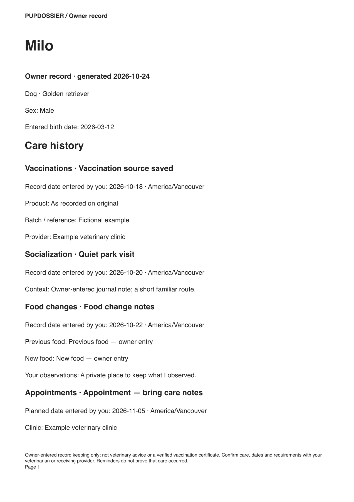
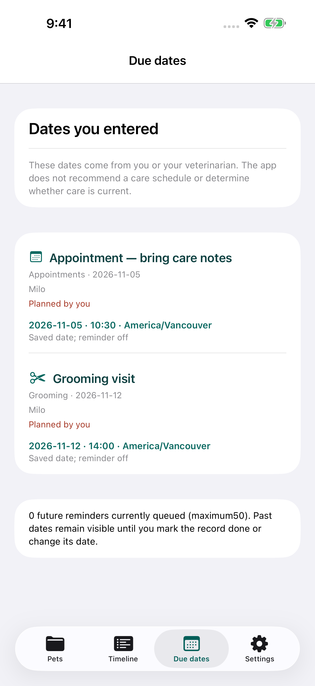
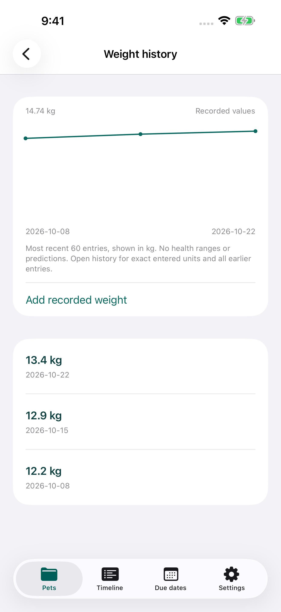
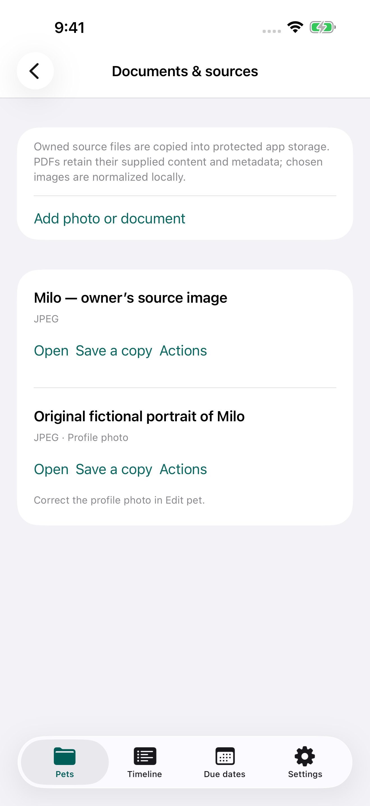

A private pet care dossier
Their history.
Ready to share.
The records you keep. The dates you enter. A clear summary for the next conversation.
Native iPhone + iPad · Protected local records
One active pet Free · Optional Lifetime Pro

01 / Keep the thread
A record you can
come back to.
Bring everyday care into one history without giving up the original.
Write what you know.
Add the date, record type and details from your own notes or the instructions your veterinarian supplied. Keep weights in the kg or lb you entered.
Keep the source close.
Choose a photo or original PDF. Correct a source while keeping the previous version in recoverable Trash.
Choose the handoff.
Preview the complete care-record PDF. Private notes, contacts and identifiers start off. Include them deliberately when needed, then save or share.
Your due dates stay the dates you entered. Marking a record done never invents the next care date. Optional local reminders use generic wording.


Actual native app screens · Fictional records · No recommended care schedule or weight targets.
02 / The details stay connected
More than a
date in a calendar.
Keep identification, contacts, private care notes, source files and recorded weights with the pet they belong to. PDFs retain the content and metadata supplied in the original. Chosen images are normalized locally without private camera/location metadata.
Save a full attachment backup before changing devices or deleting the app. Import it as fresh archived pets while keeping current work.

Actual native app screen · Fictional owned illustration.
03 / A useful place to begin
Core records Free.
More room with Pro.
Free
- One active pet and all eight care-record types
- Recorded weights, entered dates and generic reminders
- Five retained source slots plus a profile photo
- A basic full-record A4 or Letter PDF
- Corrections, Trash/restore, full backups and archived imports
Optional Lifetime Pro
One non-consumable Apple purchase. No subscription.
- More active pets and source slots
- Custom Vet visit and Caregiver handoff reports
- Date/category selections and chosen photo appendix
- CSV and full past reminder history
Apple shows your local price before purchase. Restore Purchases is in Settings. Technical file and storage limits apply.
A record, not a recommendation
Keep the history.
Confirm the care.
Pupdossier does not diagnose, recommend dates, calculate doses, interpret weight, verify vaccines or determine boarding/travel eligibility. Confirm care and requirements with your veterinarian or receiving provider.
Explore the guide ↗